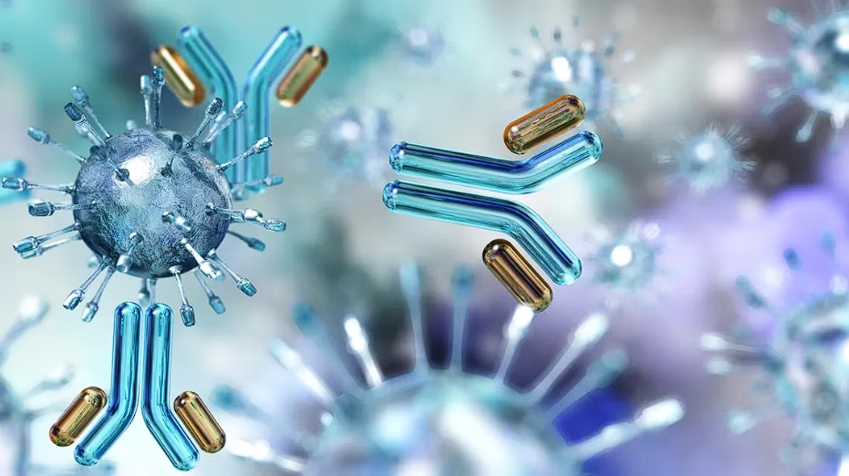
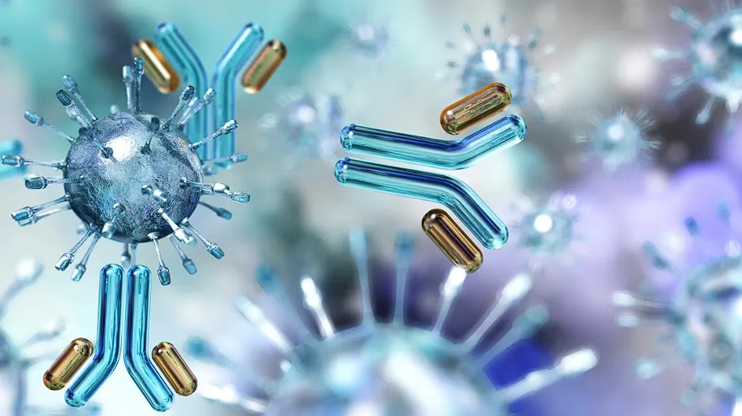
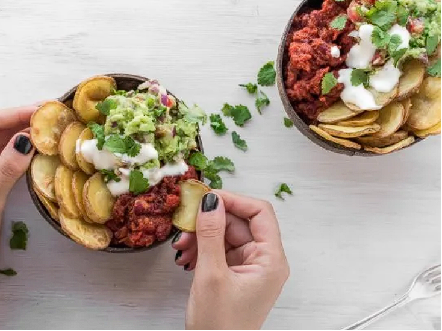

Coronavirus:
la importancia de una respuesta inmune para terminar con la pandemia



la importancia de una respuesta inmune para terminar con la pandemia
Influye en las emociones y en el sistema inmune. La alimentación es clave.
Cada vez hay un mayor interés por consumir proteínas vegetales para cuidar la salud y el medioambiente. Nuevas tecnologías revolucionan la oferta de comidas.
